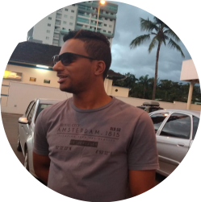

Meu nome é Rafael Pereira Dos Santos, nasci em Ivaiporã-PR atualmente moro em Brusque-SC.
No
momento sou técnico de informática, tenho mais de 7 anos de experiência na área.
Já passei pelas seguintes empresas ligadas a tecnologia: PCPRIME Soluções em informática e
Brusoft,
todas atuei como técnico.
Sempre tive interesse em trabalhar com Software, tenho uma afinidade com computadores mas tive a
oportunidade de trabalhar com hardware e agarrei. Sempre desempenhei meu papel com maestria,
me
tornando assim um ótimo profissional.
Como comentei, sempre desejei trabalhar com o Software porém faltava a coragem para dar o
primeiro passo, como me desenvolvi
muito bem na área do Hardware tinha esse receio de dar a iniciativa
até que veio o Covid e o mundo virou de ponta cabeça.
Durante a pandemia, comecei a pesquisar sobre o assunto e me inteirar até que decidi dar o
primeiro passo. Iniciei um curso
Técnico em desenvolvimento de sistemas no Senai,
e vou falar pra vocês foi a melhor coisa que já fiz na vida, me sinto completo.
Algo que eu não
sentia no Hardware.
Hoje você faz um projeto usando uma tecnologia e amanhã pode estar fazendo outro totalmente
diferente e isso me desafia a
aprender mais e querer fazer mais.
Vou falar uma frase que falo
quando alguém me pergunta o que estou achando da área:
“quanto mais você acha que sabe mais você tem a certeza que não sabe tudo”.
É
como
diz Sócrates “só sei que nada sei”, enfim estou amando essa área, e estou em busca de uma oportunidade de trabalho.
Voltando ao assunto tenho 25 anos, moro hoje com minha mãe, irmão e minha mulher.
Eu e minha mulher acabamos de
comprar uma casa e o plano é em 2023 nos mudar.